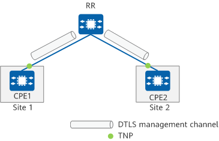
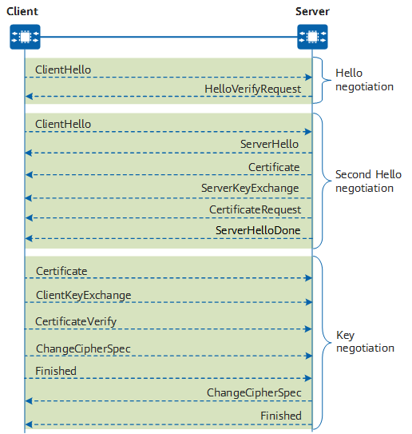
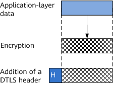

Network Model
In an SD-WAN EVPN scenario, a DTLS connection needs to be established between a CPE and an RR so that a management channel can be established for their information exchange.
In Figure 1, the DTLS network model involves the following roles:
- DTLS server: a device that provides DTLS services. In an SD-WAN EVPN scenario, an RR functions as a DTLS server.
- DTLS client: a device that requests DTLS services. In an SD-WAN EVPN scenario, a CPE functions as a DTLS client.
Figure 1 DTLS management channel
Process of Establishing a DTLS Management Channel
DTLS uses a handshake mechanism to establish a handshake connection between the DTLS client and server. During the handshake process, the client and server authenticate each other and negotiate the key and cipher suite for data encryption in data transmission. Figure 2 shows the DTLS handshake process.
Figure 2 DTLS handshake process
The following describes the DTLS handshake process.
- Hello negotiation
- ClientHello: The DTLS client sends a ClientHello message to the DTLS server, triggering a handshake. This message carries information such as the supported DTLS versions and cipher suites.
- HelloVerifyRequest: The DTLS server responds to the DTLS client with a HelloVerifyRequest message, which carries the selected DTLS version, cipher suite, and cookie information. If the DTLS server allows the DTLS client to reuse the current session in subsequent communication, the DTLS server allocates a session ID to this session.
- Secondary Hello negotiation
- ClientHello: The DTLS client sends a ClientHello message to the DTLS server again. This message carries the cookie sent by the server, random, and cipher suite used for negotiation.
- ServerHello: The DTLS server responds to the DTLS client with a ServerHello message to verify the cookie. The DTLS server proceeds with the handshake only when the cookie is valid. Otherwise, the DTLS server refuses the connection.
- Certificate: The DTLS server sends a Certificate message carrying a digital certificate containing its public key to the DTLS client so that the client can authenticate the server.
- ServerKeyExchange: The DTLS server sends the DTLS client a ServerKeyExchange message carrying its ephemeral public key.
- CertificateRequest: The DTLS server sends a CertificateRequest message to the DTLS client, requesting it to provide a certificate for identity authentication.
- ServerHelloDone: The DTLS server sends a ServerHelloDone message to the DTLS client, which means DTLS version and cipher suite negotiation has finished and key exchange can begin.
- Key negotiation
- Certificate: The DTLS client sends a Certificate message carrying its certificate to the DTLS server.
- ClientKeyExchange: The DTLS client verifies the certificate of the DTLS server, encrypts the randomly generated key using the public key in the certificate, and sends the encrypted key to the DTLS server.
- CertificateVerify: The DTLS client sends a CertificateVerify message to the DTLS server for identity authentication.
- ChangeCipherSpec: The DTLS client sends a ChangeCipherSpec message to notify the DTLS server that subsequent messages will be encrypted using the negotiated key and cipher suite.
- Finished: The DTLS client sends a Finished message to notify the DTLS server that the handshake process ends.
- ChangeCipherSpec: The DTLS server sends a ChangeCipherSpec message to notify the DTLS client that subsequent messages will be encrypted using the negotiated key and cipher suite.
- Finished: The DTLS server sends a Finished message to notify the DTLS client that the handshake process ends.
After successful DTLS handshake, the DTLS server has been successfully authenticated by the DTLS client. The DTLS server can decrypt the ClientKeyExchange message to obtain the key after it obtains the private key.
Data Transmission Process
After successful DTLS handshake, the DTLS client and server can exchange application-layer data. In an SD-WAN EVPN scenario, application data includes TNP and SA information.
Figure 3 shows the data transmission process. The local end receives application-layer data, encrypts it using an encryption algorithm, adds a DTLS header to it, and sends it to the peer end. The peer end decrypts the data once it is received.
Figure 3 Data transmission process